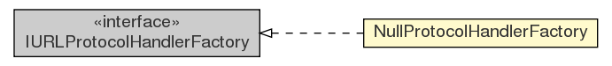

com.xuggle.xuggler.io
Class NullProtocolHandlerFactory

java.lang.Object
 com.xuggle.xuggler.io.NullProtocolHandlerFactory
com.xuggle.xuggler.io.NullProtocolHandlerFactory
- All Implemented Interfaces:
- IURLProtocolHandlerFactory
public class NullProtocolHandlerFactory
- extends Object
- implements IURLProtocolHandlerFactory
Returns a new NullProtocolHandler factory. By default Xuggler IO registers
the Null Protocol InputOutputStreamHandler under the protocol name
"xugglernull".
Any URL can be opened.
For example, "xugglernull:a_url"
| Methods inherited from class java.lang.Object |
clone, equals, finalize, getClass, hashCode, notify, notifyAll, toString, wait, wait, wait |
NullProtocolHandlerFactory
public NullProtocolHandlerFactory()
getHandler
public IURLProtocolHandler getHandler(String aProtocol,
String aUrl,
int aFlags)
- Description copied from interface:
IURLProtocolHandlerFactory
- Called by FFMPEG in order to get a handler to use for a given file.
- Specified by:
getHandler in interface IURLProtocolHandlerFactory
- Parameters:
aProtocol - The protocol without a ':'. For example, "file", "http", or "yourcustomprotocol"aUrl - The URL that FFMPEG is trying to open.aFlags - The flags that FFMPEG will pass to IURLProtocolHandler.open(String, int)
- Returns:
- A
IURLProtocolHandler to use, or null. If null, a file not found error will be passed back
to FFMPEG.
Copyright © 2008, 2010 Xuggle